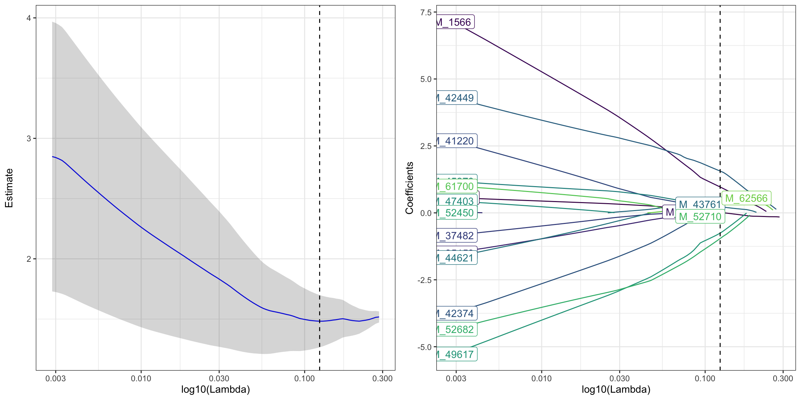
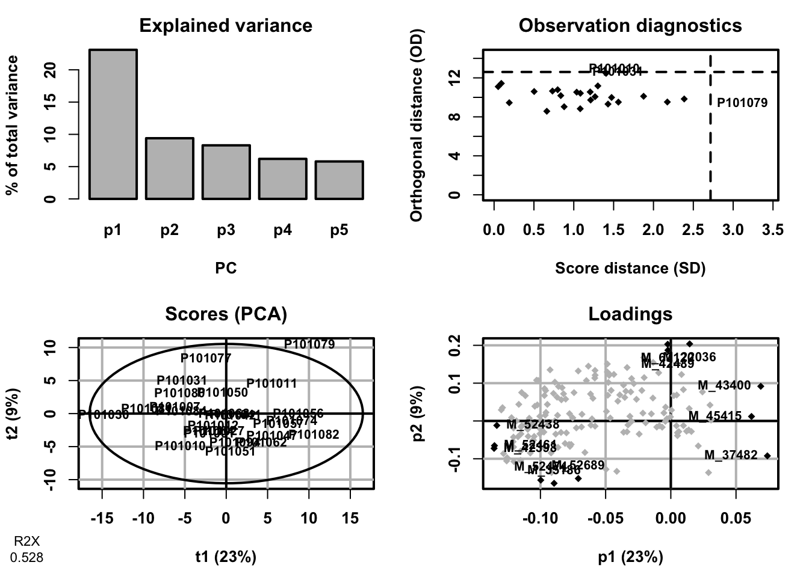
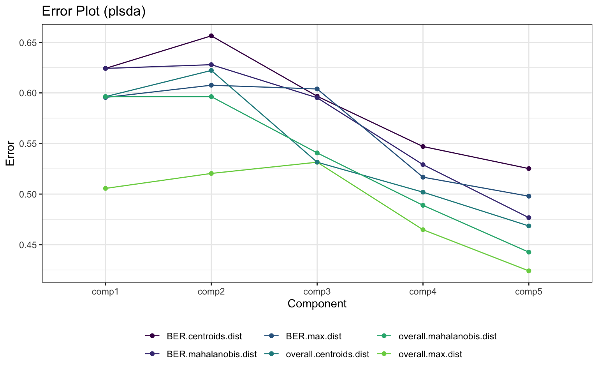
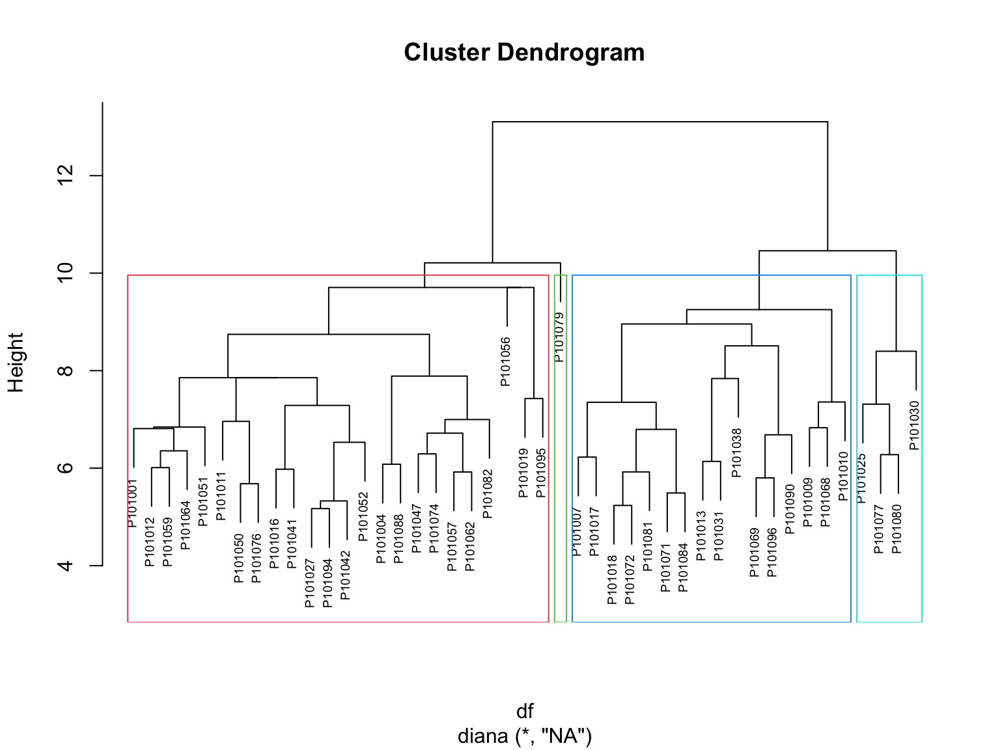
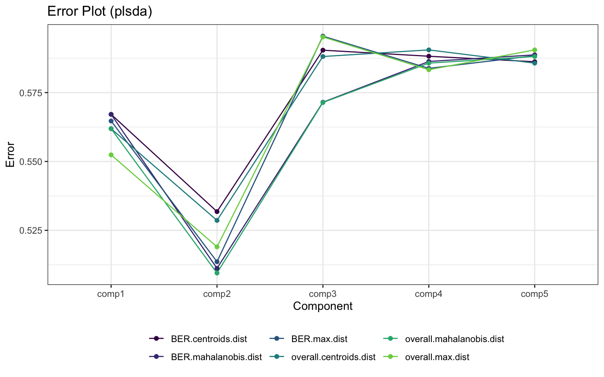

Chapter 4 Example
We perform all the data analysis on our own metabolomic data in this chapter. There are several datasets:
GvHD stool metabolites TM wide-target sequencing: /home/xuxiaomin/project/NanFangHospitalGvHD/00.data/metabolites_TM/MWY-20-522-01_2021-03-25_17-34-06/1.Data_assess/ALL_sample_data.xlsx
GvHD stool metabolites SCFA: /home/xuxiaomin/project/NanFangHospitalGvHD/00.data/metabolites_scfa/SCFA.levels.xlsx
PD-1 mice trial (round 2) serum metabolites TM wide-target sequencing: /home/xuxiaomin/project/pd1_mice/Round_2/00.data/MetaboliteSerum/MWY-20-049/1.Data_assess/all_group/ALL_sample_data.xlsx
and the metadata:
- GvHD metadata: /home/xuxiaomin/project/NanFangHospitalGvHD/00.data/metadata/metadata_v4.txt
We transform their names as following:
GvHD_stool_metabolites_TM.xlsx
GvHD_stool_metabolites_SCFA.xlsx
PD1_mice_serum_metabolites_TM.xlsx
GvHD_metadata.txt
Here, we use the GvHD_stool_metabolites_TM.xlsx to practice our template.
4.1 Loading packages
knitr::opts_chunk$set(warning = F)
library(dplyr)
library(tibble)
library(POMA)
library(ggplot2)
library(ggraph)
library(plotly)
library(SummarizedExperiment)
library(readxl)
library(cluster) # clustering algorithms
library(factoextra) # clustering visualization
library(dendextend) # for comparing two dendrograms
library(NetCoMi)
library(SPRING)
library(SpiecEasi)
library(WGCNA)
# rm(list = ls())
options(stringsAsFactors = F)
options(future.globals.maxSize = 1000 * 1024^2)4.2 Importing data
- features table
profile <- readxl::read_xlsx("./dataset/GvHD_stool_metabolites_TM.xlsx", sheet = 1)
head(profile)## # A tibble: 6 × 78
## Index Compounds 物质 `Class I` 物质一级分类 `Class II` 物质二级分类 `Q1 (Da)` `Molecular Wei…` `Ionization mo…` Formula `KEGG ID` HMDB `Pubchem CID` CAS ChEBI Metlin mix01 mix02 mix03 mix04
## <chr> <chr> <chr> <chr> <chr> <chr> <chr> <dbl> <dbl> <chr> <chr> <chr> <chr> <chr> <chr> <chr> <chr> <dbl> <dbl> <dbl> <dbl>
## 1 MEDL00066 2-Hydroxy… - - - - - 117. 118. [M-H]- C5H10O3 - HMDB… 95433 3739… 68454 6416 1.04e6 1.16e6 1.17e6 981970
## 2 MEDL00356 Phe-Asp - - - - - 245. 348. [M+H-2H2O]+ C13H16… - HMDB… 6992643 2282… - - 3.14e5 2.88e5 2.80e5 265550
## 3 MEDL00369 Glu-Phe - - - - - 293. 294. [M-H]- C14H18… - HMDB… 18653118 - - - 3.30e4 3.76e4 2.95e4 36386
## 4 MEDL00375 Glu-Trp - - - - - 334. 333. [M+H]+ C16H19… - HMDB… 100094 - 73512 - 4.36e5 4.28e5 4.53e5 490780
## 5 MEDL00392 1-Oleoyl-… - - - - - 525. 521. [M+H]+ C26H52… - HMDB… 16081932 1942… 28610 184 1.83e5 1.96e5 2.06e5 195750
## 6 MEDL00401 Confertif… - - - - - 233. 234. [M-H]- C15H22… C09376 - 435751 1811… - - 1.11e4 1.11e4 1.11e4 11020
## # … with 57 more variables: mix05 <dbl>, mix06 <dbl>, mix07 <dbl>, `TZW-V0` <dbl>, `LBC-V0` <dbl>, `HXZ-V0` <dbl>, `LJY-V0` <dbl>, `CJY-V0` <dbl>, `WKM-V0` <dbl>, `WJH-V0` <dbl>, `ZTX2-V0` <dbl>,
## # `DGL-V0` <dbl>, `ZHP-V0` <dbl>, `MZH-V0` <dbl>, `WL-V0` <dbl>, `LWJ2-V0` <dbl>, `SZP-V0` <dbl>, `LPQ-V0` <dbl>, `LHR-V0` <dbl>, `XQ-V0` <dbl>, `LJD-V0` <dbl>, `LXH-V0` <dbl>, `YF-V0` <dbl>,
## # `ZJW-V0` <dbl>, `LHC-V0` <dbl>, `LQB-V0` <dbl>, `LWL-V0` <dbl>, `XD-V0` <dbl>, `ZCY-V0` <dbl>, `ZTX1-V0` <dbl>, `TZW-V1` <dbl>, `HXZ-V1` <dbl>, `LJY-V1` <dbl>, `CJY-V1` <dbl>, `WKM-V1` <dbl>,
## # `WJH-V1` <dbl>, `ZTX2-V1` <dbl>, `DGL-V1` <dbl>, `ZHP-V1` <dbl>, `MZH-V1` <dbl>, `WL-V1` <dbl>, `LWJ2-V1` <dbl>, `SZP-V1` <dbl>, `YF-V1` <dbl>, `LPQ-V1` <dbl>, `LHR-V1` <dbl>, `XQ-V1` <dbl>,
## # `LJD-V1` <dbl>, `LXH-V1` <dbl>, `ZJW-V1` <dbl>, `LHC-V1` <dbl>, `LBC-V1` <dbl>, `ZTX1-V1` <dbl>, `LQB-V1` <dbl>, `LWL-V1` <dbl>, `ZCY-V1` <dbl>, `XD-V1` <dbl>- metadata table
metadata <- data.table::fread("./dataset/GvHD_metadata.txt")
head(metadata)## seq_id SampleName FMT_status SampleType Group V1_outcome GVHD_type GVHD_type_phynotype Donor baseline_merge baseline_aGVHD_sainai baseline_aGVHD_sainai_detail
## 1: 4371 CJY V0 stool kid CR cGVHD diarrhea DO1
## 2: 4389 CJY V1 stool kid CR cGVHD diarrhea DO1
## 3: 4426 CJY_WKM_LXH_FMTdonor bacteria_solution donor
## 4: 4375 DGL V0 stool adult CR cGVHD bowel DO2 medium
## 5: 4393 DGL V1 stool adult CR cGVHD bowel DO2
## 6: 4435 DGL_FMTdonor bacteria_solution donor
## baseline_aGVHD_glucksberg baseline_aGVHD_glucksberg_detail baseline_cGVHD_NIH baseline_cGVHD_NIH_detail Baseline_infection antibiotics_48h_pre_or_post_FMT GVHDdrug_antiMicrobiomeDrug_2weeksPreV0
## 1:
## 2:
## 3:
## 4: 中度 肠道2级，皮肤1级 他克莫司、麦考酚酯、伊曲康唑
## 5: 他克莫司、麦考酚酯、伊曲康唑
## 6:
## GVHDdrug_antiMicrobiomeDrug_V0toV1 FMT_method gender age Diagnosis HSCT_DLI_date Pretreatment Pretreatment_type GVHD_prevention death relapse
## 1: nasojejunal tube male 3 AML 2020/5/28 Ara-c+CY+IVBu+ATG+Flu+PTCy+PTCy（Ara+Cy+Bu+Flu+PTCy） marrow cleansing PTCY+PTFLU+MMF+FK506
## 2: nasojejunal tube male 3 AML 2020/5/28 Ara-c+CY+IVBu+ATG+Flu+PTCy+PTCy（Ara+Cy+Bu+Flu+PTCy） marrow cleansing PTCY+PTFLU+MMF+FK506
## 3: NA
## 4: 他克莫司、麦考酚酯、伊曲康唑 colonoscope male 36 AML 2019/12/1 BUCY marrow cleansing CSA+MTX+MMF+ATG
## 5: 他克莫司、麦考酚酯、伊曲康唑 colonoscope male 36 AML 2019/12/1 BUCY marrow cleansing CSA+MTX+MMF+ATG
## 6: NAData Preparation: SummarizedExperiment object
Renaming column
Replace 9 by NA
column with
mixprefix are regards as QC samples
getSEobject <- function(x, y) {
# x = metadata
# y = profile
# mix : qc samples
qc_samples <- grep("mix", colnames(profile), value = T)
qc_groups <- data.frame(SampleID = qc_samples,
V1_outcome = rep("QC", length(qc_samples)),
SampleName = rep("SampleName", length(qc_samples)),
FMT_status = rep("FMT_status", length(qc_samples)),
gender = rep("gender", length(qc_samples)),
age = rep("age", length(qc_samples)))
# target table
target <- x %>%
dplyr::filter(FMT_status != "") %>%
dplyr::mutate(SampleID = paste(SampleName, FMT_status, sep = "_")) %>%
dplyr::select(SampleID, V1_outcome, SampleName, FMT_status, gender, age) %>%
rbind(qc_groups)
# profile column
colnames(y) <- gsub("-", "_", colnames(y))
sid <- intersect(target$SampleID, colnames(y))
features <- y %>%
dplyr::select(all_of(sid)) %>%
data.frame() %>% t()
colnames(features) <- y$Index
# replace 9 by NA
features[features == 9] <- NA
target <- target[pmatch(sid, target$SampleID), , F]
res <- PomaSummarizedExperiment(target = target,
features = features)
return(res)
}
se <- getSEobject(metadata, profile)
se## class: SummarizedExperiment
## dim: 1235 61
## metadata(0):
## assays(1): ''
## rownames(1235): MEDL00066 MEDL00356 ... MW0169477 MW0169569
## rowData names(0):
## colnames(61): CJY_V0 CJY_V1 ... mix06 mix07
## colData names(5): group SampleName FMT_status gender age4.3 Data Processing
4.3.1 Data Checking
Features in PomaSummarizedExperiment object must have the following criterion:
All data values are numeric.
A total of 0 (0%) missing values were detected.
CheckData <- function(object) {
features_tab <- SummarizedExperiment::assay(object)
# numeric & missing values
int_mat <- features_tab
rowNms <- rownames(int_mat)
colNms <- colnames(int_mat)
naNms <- sum(is.na(int_mat))
for (i in 1:ncol(int_mat)) {
if (class(int_mat[, i]) == "integer64") {
int_mat[, i] <- as.double(int_mat[, i])
}
}
num_mat <- apply(int_mat, 2, as.numeric)
if (sum(is.na(num_mat)) > naNms) {
num_mat <- apply(int_mat, 2, function(x) as.numeric(gsub(",", "", x)))
if (sum(is.na(num_mat)) > naNms) {
message("<font color=\"red\">Non-numeric values were found and replaced by NA.</font>")
} else {
message("All data values are numeric.")
}
} else {
message("All data values are numeric.")
}
int_mat <- num_mat
rownames(int_mat) <- rowNms
colnames(int_mat) <- colNms
varCol <- apply(int_mat, 2, var, na.rm = T)
constCol <- (varCol == 0 | is.na(varCol))
constNum <- sum(constCol, na.rm = T)
if (constNum > 0) {
message(paste("<font color=\"red\">", constNum,
"features with a constant or single value across samples were found and deleted.</font>"))
int_mat <- int_mat[, !constCol, drop = FALSE]
}
totalCount <- nrow(int_mat) * ncol(int_mat)
naCount <- sum(is.na(int_mat))
naPercent <- round(100 * naCount/totalCount, 1)
message(paste("A total of ", naCount, " (", naPercent,
"%) missing values were detected.", sep = ""))
# save int_mat into se object
target <- SummarizedExperiment::colData(object) %>%
data.frame() %>%
tibble::rownames_to_column("SampleID")
res <- PomaSummarizedExperiment(target = target,
features = t(int_mat))
return(res)
}
se <- CheckData(object = se)
se## class: SummarizedExperiment
## dim: 1235 61
## metadata(0):
## assays(1): ''
## rownames(1235): MEDL00066 MEDL00356 ... MW0169477 MW0169569
## rowData names(0):
## colnames(61): CJY_V0 CJY_V1 ... mix06 mix07
## colData names(5): group SampleName FMT_status gender age4.3.2 Data Filtering
FilterFeature <- function(
object,
qc_label,
method = c("none", "iqr", "rsd",
"nrsd", "mean", "sd",
"mad", "median"),
rsd_cutoff = 25) {
features_tab <- SummarizedExperiment::assay(object)
metadata_tab <- SummarizedExperiment::colData(object)
# QC samples
qc_samples <- metadata_tab %>% data.frame() %>%
dplyr::filter(group == qc_label)
if (dim(qc_samples)[1] == 0) {
stop("No qc samples have been chosen, please check your input")
}
# QC samples' feature table
qc_feature <- features_tab[, colnames(features_tab) %in% rownames(qc_samples)] %>%
t()
# filter features by QC RSD
rsd <- rsd_cutoff / 100
sds <- apply(qc_feature, 2, sd, na.rm = T)
mns <- apply(qc_feature, 2, mean, na.rm = T)
rsd_vals <- abs(sds/mns) %>% na.omit()
gd_inx <- rsd_vals < rsd
int_mat <- features_tab[gd_inx, ]
message("Removed ", (dim(qc_feature)[2] - dim(int_mat)[1]),
" features based on QC RSD values. QC samples are excluded from downstream functional analysis.")
# whether to filter features by percentage according to the number
PerformFeatureFilter <- function(datMatrix,
qc_method = method,
remain_num = NULL) {
dat <- datMatrix
feat_num <- ncol(dat)
feat_nms <- colnames(dat)
nm <- NULL
if (qc_method == "none" && feat_num < 5000) { # only allow for less than 4000
remain <- rep(TRUE, feat_num)
nm <- "No filtering was applied"
} else {
if (qc_method == "rsd"){
sds <- apply(dat, 2, sd, na.rm = T)
mns <- apply(dat, 2, mean, na.rm = T)
filter_val <- abs(sds/mns)
nm <- "Relative standard deviation"
} else if (qc_method == "nrsd" ) {
mads <- apply(dat, 2, mad, na.rm = T)
meds <- apply(dat, 2, median, na.rm = T)
filter_val <- abs(mads/meds)
nm <- "Non-paramatric relative standard deviation"
} else if (qc_method == "mean") {
filter_val <- apply(dat, 2, mean, na.rm = T)
nm <- "mean"
} else if (qc_method == "sd") {
filter_val <- apply(dat, 2, sd, na.rm = T)
nm <- "standard deviation"
} else if (qc_method == "mad") {
filter_val <- apply(dat, 2, mad, na.rm = T)
nm <- "Median absolute deviation"
} else if (qc_method == "median") {
filter_val <- apply(dat, 2, median, na.rm = T)
nm <- "median"
} else if (qc_method == "iqr") { # iqr
filter_val <- apply(dat, 2, IQR, na.rm = T)
nm <- "Interquantile Range"
}
# get the rank of the filtered variables
rk <- rank(-filter_val, ties.method = "random")
if (is.null(remain_num)) { # apply empirical filtering based on data size
if (feat_num < 250) { # reduce 5%
remain <- rk < feat_num * 0.95
message("Further feature filtering based on ", nm)
} else if (feat_num < 500) { # reduce 10%
remain <- rk < feat_num * 0.9
message("Further feature filtering based on ", nm)
} else if (feat_num < 1000) { # reduce 25%
remain <- rk < feat_num * 0.75
message("Further feature filtering based on ", nm)
} else { # reduce 40%, if still over 5000, then only use top 5000
remain <- rk < feat_num * 0.6
message("Further feature filtering based on ", nm)
}
} else {
remain <- rk < remain_num
}
}
res <- datMatrix[, remain]
return(res)
}
feature_res <- PerformFeatureFilter(t(int_mat))
# remove QC samples
feature_final <- feature_res[!rownames(feature_res) %in% rownames(qc_samples), ]
# save int_mat into se object
target <- metadata_tab %>%
data.frame() %>%
tibble::rownames_to_column("SampleID") %>%
dplyr::filter(SampleID %in% rownames(feature_final))
res <- PomaSummarizedExperiment(target = target,
features = feature_final)
return(res)
}
se_filter <- FilterFeature(object = se,
qc_label = "QC",
method = "iqr")
se_filter## class: SummarizedExperiment
## dim: 715 54
## metadata(0):
## assays(1): ''
## rownames(715): MEDL00066 MEDL00375 ... MW0168764 MW0169569
## rowData names(0):
## colnames(54): CJY_V0 CJY_V1 ... ZTX2_V0 ZTX2_V1
## colData names(5): group SampleName FMT_status gender age4.3.3 Missing Value Imputation
se_impute <- PomaImpute(
se_filter,
ZerosAsNA = TRUE,
RemoveNA = TRUE,
cutoff = 20,
method = "knn")
se_impute## class: SummarizedExperiment
## dim: 540 54
## metadata(0):
## assays(1): ''
## rownames(540): MEDL00066 MEDL00375 ... MW0168675 MW0169569
## rowData names(0):
## colnames(54): CJY_V0 CJY_V1 ... ZTX2_V0 ZTX2_V1
## colData names(5): group SampleName FMT_status gender age4.3.4 Data Normalization
4.3.4.1 Normalization by NormalizeData function
NormalizeData <- function(
object,
rowNorm = c("Quantile", "GroupPQN", "SamplePQN",
"CompNorm", "SumNorm", "MedianNorm",
"SpecNorm", "None"),
transNorm = c("LogNorm", "SrNorm", "CrNorm", "None"),
scaleNorm = c("MeanCenter", "AutoNorm", "ParetoNorm",
"RangeNorm", "None"),
ref = NULL,
SpeWeight = 1) {
features_tab <- SummarizedExperiment::assay(object)
metadata_tab <- SummarizedExperiment::colData(object)
data <- t(features_tab)
colNames <- colnames(data)
rowNames <- rownames(data)
#############################################
# Sample normalization
# perform quantile normalization on the raw data (can be log transformed later by user)
QuantileNormalize <- function(data) {
return(t(preprocessCore::normalize.quantiles(t(data), copy=FALSE)));
}
# normalize by a reference sample (probability quotient normalization)
# ref should be the name of the reference sample
ProbNorm <- function(x, ref_smpl) {
return(x/median(as.numeric(x/ref_smpl), na.rm = T))
}
# normalize by a reference reference (i.e. creatinine)
# ref should be the name of the cmpd
CompNorm <- function(x, ref) {
return(1000*x/x[ref])
}
SumNorm <- function(x) {
return(1000*x/sum(x, na.rm = T))
}
# normalize by median
MedianNorm <- function(x) {
return(x/median(x, na.rm = T))
}
# row-wise normalization
if (rowNorm == "Quantile") {
data <- QuantileNormalize(data)
# this can introduce constant variables if a variable is
# at the same rank across all samples (replaced by its average across all)
varCol <- apply(data, 2, var, na.rm = T)
constCol <- (varCol == 0 | is.na(varCol))
constNum <- sum(constCol, na.rm = T)
if (constNum > 0) {
message(paste("After quantile normalization", constNum,
"features with a constant value were found and deleted."))
data <- data[, !constCol, drop = FALSE]
colNames <- colnames(data)
rowNames <- rownames(data)
}
rownm <- "Quantile Normalization"
} else if (rowNorm == "GroupPQN") {
grp_inx <- metadata_tab$group == ref
ref.smpl <- apply(data[grp_inx, , drop = FALSE], 2, mean)
data <- t(apply(data, 1, ProbNorm, ref.smpl))
rownm <- "Probabilistic Quotient Normalization by a reference group"
} else if (rowNorm == "SamplePQN") {
ref.smpl <- data[ref, , drop = FALSE]
data <- t(apply(data, 1, ProbNorm, ref.smpl))
rownm <- "Probabilistic Quotient Normalization by a reference sample"
} else if (rowNorm == "CompNorm") {
data <- t(apply(t(data), 1, CompNorm, ref))
rownm <- "Normalization by a reference feature";
} else if (rowNorm == "SumNorm") {
data <- t(apply(data, 1, SumNorm))
rownm <- "Normalization to constant sum"
} else if (rowNorm == "MedianNorm") {
data <- t(apply(data, 1, MedianNorm))
rownm <- "Normalization to sample median"
} else if(rowNorm == "SpecNorm") {
norm.vec <- rep(SpeWeight, nrow(data)) # default all same weight vec to prevent error
data <- data / norm.vec
message("No sample specific information were given, all set to 1.0")
rownm <- "Normalization by sample-specific factor"
} else {
# nothing to do
rownm <- "N/A"
}
################################################
# use apply will lose dimension info (i.e. row names and colnames)
rownames(data) <- rowNames
colnames(data) <- colNames
# if the reference by feature, the feature column should be removed, since it is all 1
if(rowNorm == "CompNorm" && !is.null(ref)){
inx <- match(ref, colnames(data))
data <- data[, -inx, drop=FALSE]
colNames <- colNames[-inx]
}
#############################################
# Data transformation
# generalize log, tolerant to 0 and negative values
LogNorm <- function(x, min.val) {
return(log10((x + sqrt(x^2 + min.val^2))/2))
}
# square root, tolerant to negative values
SquareRootNorm <- function(x, min.val) {
return(((x + sqrt(x^2 + min.val^2))/2)^(1/2))
}
if (transNorm == "LogNorm") {
min.val <- min(abs(data[data != 0]))/10
data <- apply(data, 2, LogNorm, min.val)
transnm <- "Log10 Normalization"
} else if (transNorm == "SrNorm") {
min.val <- min(abs(data[data != 0]))/10
data <- apply(data, 2, SquareRootNorm, min.val)
transnm <- "Square Root Transformation"
} else if (transNorm == "CrNorm") {
norm.data <- abs(data)^(1/3)
norm.data[data < 0] <- -norm.data[data < 0]
data <- norm.data
transnm <- "Cubic Root Transformation"
} else {
transnm <- "N/A"
}
#############################################
#############################################
# Data scaling
# normalize to zero mean and unit variance
AutoNorm <- function(x) {
return((x - mean(x))/sd(x, na.rm = T))
}
# normalize to zero mean but variance/SE
ParetoNorm <- function(x) {
return((x - mean(x))/sqrt(sd(x, na.rm = T)))
}
# normalize to zero mean but variance/SE
MeanCenter <- function(x) {
return(x - mean(x))
}
# normalize to zero mean but variance/SE
RangeNorm <- function(x) {
if (max(x) == min(x)) {
return(x)
} else {
return((x - mean(x))/(max(x) - min(x)))
}
}
if (scaleNorm == "MeanCenter") {
data <- apply(data, 2, MeanCenter)
scalenm <- "Mean Centering"
} else if (scaleNorm == "AutoNorm") {
data <- apply(data, 2, AutoNorm)
scalenm <- "Autoscaling"
} else if (scaleNorm == "ParetoNorm") {
data <- apply(data, 2, ParetoNorm)
scalenm <- "Pareto Scaling"
} else if (scaleNorm == "RangeNorm") {
data <- apply(data, 2, RangeNorm)
scalenm <- "Range Scaling"
} else {
scalenm <- "N/A"
}
#############################################
message("Row norm: ", rownm, "\n",
"Data Transformation norm: ", transnm, "\n",
"Data Scaling norm: ", scalenm, "\n")
# note after using "apply" function, all the attribute lost, need to add back
rownames(data) <- rowNames
colnames(data) <- colNames
target <- metadata_tab %>%
data.frame() %>%
tibble::rownames_to_column("SampleID") %>%
dplyr::filter(SampleID%in%rownames(data))
se <- PomaSummarizedExperiment(target = target,
features = data)
# need to do some sanity check, for log there may be Inf values introduced
res <- CheckData(se)
return(res)
}
se_normalize <- NormalizeData(
object = se_impute,
rowNorm = "None",
transNorm = "LogNorm",
scaleNorm = "ParetoNorm")
se_normalize## class: SummarizedExperiment
## dim: 540 54
## metadata(0):
## assays(1): ''
## rownames(540): MEDL00066 MEDL00375 ... MW0168675 MW0169569
## rowData names(0):
## colnames(54): CJY_V0 CJY_V1 ... ZTX2_V0 ZTX2_V1
## colData names(5): group SampleName FMT_status gender age4.3.4.2 Normalization by POMA R package
se_normalize_v2 <- PomaNorm(se_impute, method = "log_pareto")
se_normalize_v2## class: SummarizedExperiment
## dim: 540 54
## metadata(0):
## assays(1): ''
## rownames(540): MEDL00066 MEDL00375 ... MW0168675 MW0169569
## rowData names(0):
## colnames(54): CJY_V0 CJY_V1 ... ZTX2_V0 ZTX2_V1
## colData names(5): group SampleName FMT_status gender age4.3.4.3 Comparison of unnormalized and normalized dataset
- boxplot
pl_unnor <- PomaBoxplots(se_impute, group = "samples", jitter = FALSE) +
ggtitle("Not Normalized") +
theme(legend.position = "none") # data before normalization
pl_nor <- PomaBoxplots(se_normalize, group = "samples", jitter = FALSE) +
ggtitle("Normalized") # data after normalization
cowplot::plot_grid(pl_unnor, pl_nor, ncol = 1, align = "v")
- density
pl_unnor <- PomaDensity(se_impute, group = "features") +
ggtitle("Not Normalized") +
theme(legend.position = "none") # data before normalization
pl_nor <- PomaDensity(se_normalize, group = "features") +
ggtitle("Normalized") # data after normalization
cowplot::plot_grid(pl_unnor, pl_nor, ncol = 1, align = "v")
4.4 Cluster Analysis
4.4.1 Hierarchical Clustering
HieraCluster <- function(object,
method_dis = c("euclidean", "bray"),
method_cluster = c("average", "single", "complete", "ward", "ward.D2"),
cluster_type = c("Agglomerative", "Divisive"),
tree_num = 4) {
features_tab <- SummarizedExperiment::assay(object)
metadata_tab <- SummarizedExperiment::colData(object)
df <- t(features_tab)
if (cluster_type == "Agglomerative") {
# Agglomerative Hierarchical Clustering
# Dissimilarity matrix
d <- dist(df, method = method_dis)
# Hierarchical clustering using Linkage method
hc <- hclust(d, method = method_cluster)
# hc <- agnes(df, method = method_cluster)
####### identifying the strongest clustering structure ################
# # methods to assess
# m <- c( "average", "single", "complete", "ward")
# names(m) <- c( "average", "single", "complete", "ward")
#
# # function to compute coefficient
# ac <- function(x) {
# agnes(df, method = x)$ac
# }
#
# map_dbl(m, ac)
} else if (cluster_type == "Divisive") {
# Divisive Hierarchical Clustering
hc <- diana(df, metric = method_dis)
}
hc_res <- as.hclust(hc)
sub_grp <- cutree(hc_res, k = tree_num)
plot(hc_res, cex = 0.6)
rect.hclust(hc_res, k = tree_num, border = 2:(tree_num+1))
res <- list(data=df,
cluster=sub_grp,
hc=hc_res)
return(res)
}- Calculation
Agg_hc_res <- HieraCluster(
object = se_normalize,
method_dis = "euclidean",
method_cluster = "ward.D2",
cluster_type = "Agglomerative",
tree_num = 3)
- Visualization: visualize the result in a scatter plot
fviz_cluster(list(data = Agg_hc_res$data,
cluster = Agg_hc_res$cluster))4.5 Chemometrics Analysis
4.5.1 Partial Least Squares-Discriminant Analysis (PLS-DA)
- Calculation
poma_plsda <- PomaMultivariate(se_normalize, method = "plsda")- scatter plot
poma_plsda$scoresplot +
ggtitle("Scores Plot (plsda)")
- errors plot
poma_plsda$errors_plsda_plot +
ggtitle("Error Plot (plsda)")
4.5.2 Sparse Partial Least Squares-Discriminant Analysis (sPLS-DA)
Even though PLS is highly efficient in a high dimensional context, the interpretability of PLS needed to be improved. sPLS has been recently developed by our team to perform simultaneous variable selection in both data sets X and Y data sets, by including LASSO penalizations in PLS on each pair of loading vectors
- Calculation
poma_splsda <- PomaMultivariate(se_normalize, method = "splsda")- scatter plot
poma_splsda$scoresplot +
ggtitle("Scores Plot (splsda)")
4.6 Univariate Analysis
4.6.1 Fold Change Analysis
FoldChange <- function(object,
group_names,
fc_cutoff = 2,
cmp_type = 0,
paired = FALSE) {
features_tab <- SummarizedExperiment::assay(object)
metadata_tab <- SummarizedExperiment::colData(object)
metadata <- metadata_tab %>%
data.frame() %>%
dplyr::filter(group %in% group_names)
profile <- features_tab[, pmatch(rownames(metadata), colnames(features_tab))]
# make sure threshold is above 1
fc_cutoff <- ifelse(fc_cutoff > 1, fc_cutoff, 1/fc_cutoff)
max_cutoff <- fc_cutoff
min_cutoff <- 1 / fc_cutoff
GetFC <- function(x,
y,
cmpType,
paired = FALSE) {
# x = profile
# y = metadata
# cmpType = cmp_type
# paired = paired
x <- t(x)
colNames <- colnames(x)
rowNames <- rownames(x)
if (paired) {
# compute the average of paired FC (unit is pair)
G1 <- x[which(y$group == group_names[1]), ]
G2 <- x[which(y$group == group_names[2]), ]
if (cmpType == 0) {
fc.mat <- G1 - G2
} else {
fc.mat <- G2 - G1
}
fc.log <- apply(fc.mat, 2, mean)
fc.all <- signif(2^fc.log, 5)
} else {
m1 <- colMeans(x[which(y$group == group_names[1]), ])
m2 <- colMeans(x[which(y$group == group_names[2]), ])
# create a named matrix of sig vars for display
if (cmpType == 0) {
ratio <- m1/m2
} else {
ratio <- m2/m1
}
fc.all <- signif(ratio, 5)
ratio[ratio < 0] <- 0
fc.log <- signif(log2(ratio), 5)
fc.log[is.infinite(fc.log) & fc.log < 0] <- -99
fc.log[is.infinite(fc.log) & fc.log > 0] <- 99
}
names(fc.all) <- names(fc.log) <- colnames(x)
res <- list(fc.all = fc.all, fc.log = fc.log)
return(res)
}
res <- GetFC(profile, metadata, cmp_type, paired)
fc.all <- res$fc.all
fc.log <- res$fc.log
inx.up <- fc.all > max_cutoff
inx.down <- fc.all < min_cutoff
names(inx.up) <- names(inx.down) <- names(fc.all)
imp.inx <- inx.up | inx.down
sig.mat <- cbind(fc.all[imp.inx, drop = F], fc.log[imp.inx, drop = F])
colnames(sig.mat) <- c("Fold Change", "log2(FC)")
# order by absolute log value (since symmetrical in pos and neg)
inx.ord <- order(abs(sig.mat[, 2]), decreasing = T)
sig.mat <- sig.mat[inx.ord, , drop = F]
return(sig.mat)
}
FC_res <- FoldChange(
object = se_normalize,
fc_cutoff = 2,
group_names = c("NR", "PR"),
cmp_type = 0,
paired = FALSE)
head(FC_res)## Fold Change log2(FC)
## MEDL00066 -8.31480 -99
## MEDL00375 -0.34779 -99
## MEDL01844 -0.40162 -99
## MEDL01922 -0.18899 -99
## MEDL01994 -0.54180 -99
## MEDL02018 -0.34413 -994.6.2 T Test
group_names <- c("NR", "PR")
se_normalize_subset <- se_normalize[, se_normalize$group %in% group_names]
se_normalize_subset$group <- factor(as.character(se_normalize_subset$group))
ttest_res <- PomaUnivariate(se_normalize_subset, method = "ttest")
head(ttest_res)## # A tibble: 6 × 9
## feature FC diff_means pvalue pvalueAdj mean_NR mean_PR sd_NR sd_PR
## <chr> <dbl> <dbl> <dbl> <dbl> <dbl> <dbl> <dbl> <dbl>
## 1 MEDL00066 -0.12 0.174 0.506 0.833 -0.155 0.0187 0.700 0.991
## 2 MEDL00375 -2.88 0.149 0.503 0.833 -0.0384 0.111 0.827 0.620
## 3 MEDL00587 1.40 0.014 0.937 0.980 0.0342 0.0480 0.571 0.573
## 4 MEDL01844 -2.49 -0.311 0.232 0.662 0.0891 -0.222 0.850 0.849
## 5 MEDL01922 -5.29 0.069 0.812 0.931 -0.0110 0.0584 0.751 1.13
## 6 MEDL01994 -1.85 0.117 0.0795 0.434 -0.0412 0.0760 0.182 0.245
4.7 Feature Selection
4.7.1 Regularized Generalized Linear Models (Lasso: alpha = 1)
lasso_res <- PomaLasso(se_normalize_subset, alpha = 1, labels = TRUE)
cowplot::plot_grid(lasso_res$cvLassoPlot,
lasso_res$coefficientPlot,
ncol = 2, align = "h")
lasso_res$coefficients## # A tibble: 21 × 2
## feature coefficient
## <chr> <dbl>
## 1 (Intercept) -0.207
## 2 MEDL01844 -0.0577
## 3 MEDN0366 -0.478
## 4 MEDN1135 0.542
## 5 MEDN1285 -0.152
## 6 MEDP0006 0.208
## 7 MEDP0089 -0.228
## 8 MEDP0151 0.329
## 9 MEDP0295 -0.134
## 10 MEDP0401 -0.220
## # … with 11 more rows
4.8 Network Analysis
4.8.1 Data curation
features_tab <- SummarizedExperiment::assay(se_filter) %>%
t()
features_tab[is.na(features_tab)] <- 0
print(features_tab[1:6, 1:10])## MEDL00066 MEDL00375 MEDL00587 MEDL01799 MEDL01801 MEDL01844 MEDL01922 MEDL01994 MEDL02002 MEDL02018
## CJY_V0 10447 31087 618200 0 0 127250 0 2590400 0 485040
## CJY_V1 4011900 88306 563130 51267 1046200 4172100 107560 3772200 133920 1400100
## DGL_V0 560560 449150 1079300 304040 147100 19462000 39149 2950700 3216700 684140
## DGL_V1 149120 263050 2047500 24342 357050 14373000 964600 3328000 2512900 1659500
## HXZ_V0 442540 216830 1399700 1481800 1976000 7830000 269570 2588200 3719000 3433700
## HXZ_V1 181010 37280 1171700 0 0 5171400 196770 3097700 0 32699004.8.2 Building network model
net_single <- netConstruct(features_tab,
measure = "sparcc",
measurePar = list(iter = 20,
inner_iter = 10,
th = 0.1),
filtTax = "highestVar",
filtTaxPar = list(highestVar = 50),
filtSamp = "totalReads",
filtSampPar = list(totalReads = 100),
verbose = 3,
seed = 123)4.8.3 Visualizing the network
props_single <- netAnalyze(net_single, clustMethod = "cluster_fast_greedy")
plot(props_single,
nodeColor = "cluster",
nodeSize = "eigenvector",
repulsion = 0.8,
rmSingles = TRUE,
labelScale = FALSE,
cexLabels = 1.6,
nodeSizeSpread = 3,
cexNodes = 2,
title1 = "Network on metabolomics with Pearson correlations",
showTitle = TRUE,
cexTitle = 1.5)
legend(0.7, 1.1, cex = 1.2, title = "estimated correlation:",
legend = c("+","-"), lty = 1, lwd = 3, col = c("#009900","red"),
bty = "n", horiz = TRUE)
4.9 Network Analysis by WGCNA
Performing Network Analysis step by step through WGCNA R package.
4.9.1 Data curation
Data Matrix
Row -> metabolites
Column -> samples
features_tab <- SummarizedExperiment::assay(se_impute)
print(features_tab[1:6, 1:10])## CJY_V0 CJY_V1 DGL_V0 DGL_V1 HXZ_V0 HXZ_V1 LBC_V0 LBC_V1 LHC_V1 LHC_V0
## MEDL00066 10447 4011900 560560 149120 442540 181010 12620 173400 97848.0 25072.83
## MEDL00375 31087 88306 449150 263050 216830 37280 302150 607850 87101.0 7595.70
## MEDL00587 618200 563130 1079300 2047500 1399700 1171700 1120700 1109300 1025300.0 533040.00
## MEDL01844 127250 4172100 19462000 14373000 7830000 5171400 57063 1946700 100670.0 143560.00
## MEDL01922 184698 107560 39149 964600 269570 196770 28797 72528 140508.2 182958.02
## MEDL01994 2590400 3772200 2950700 3328000 2588200 3097700 3373500 3283000 3427700.0 3223700.00- Data normalization
# TSS
features_tab_norm <- XMAS2::norm_tss(phyloseq::otu_table(features_tab, taxa_are_rows = T)) %>%
data.frame() %>% t()
print(features_tab_norm[1:6, 1:10])## MEDL00066 MEDL00375 MEDL00587 MEDL01844 MEDL01922 MEDL01994 MEDL02002 MEDL02018 MEDL02174 MEDL02519
## CJY_V0 7.266924e-06 2.162409e-05 0.0004300194 8.851499e-05 1.284758e-04 0.0018018800 9.688354e-04 0.0003373934 0.0008276238 5.364045e-04
## CJY_V1 2.018886e-03 4.443774e-05 0.0002833808 2.099503e-03 5.412682e-05 0.0018982634 6.739182e-05 0.0007045646 0.0053125408 9.121950e-04
## DGL_V0 1.534502e-04 1.229523e-04 0.0002954523 5.327614e-03 1.071682e-05 0.0008077376 8.805537e-04 0.0001872795 0.0013967809 6.574793e-04
## DGL_V1 3.721535e-05 6.564846e-05 0.0005109874 3.587019e-03 2.407318e-04 0.0008305572 6.271356e-04 0.0004141556 0.0060542331 1.840278e-04
## HXZ_V0 1.100101e-04 5.390131e-05 0.0003479485 1.946443e-03 6.701183e-05 0.0006433951 9.244983e-04 0.0008535762 0.0018885718 1.518648e-04
## HXZ_V1 6.310899e-05 1.299764e-05 0.0004085122 1.803004e-03 6.860370e-05 0.0010800105 8.873314e-04 0.0011400479 0.0009249314 5.116427e-06# # CSS
# features_tab_norm <- XMAS2::norm_css(phyloseq::otu_table(features_tab, taxa_are_rows = T)) %>%
# data.frame() %>% t()
# print(features_tab_norm[1:6, 1:10])4.9.2 Tuning soft thresholds
Picking a threshhold value (if correlation is below threshold, remove the edge). WGCNA will try a range of soft thresholds and create a diagnostic plot.
- Choose a set of soft-thresholding powers
powers <- c(c(1:10), seq(12, 20, 2))Call the network topology analysis function
Row -> samples
Column -> metabolites
sft <- pickSoftThreshold(
features_tab_norm,
powerVector = powers,
networkType = "unsigned",
verbose = 2)## pickSoftThreshold: will use block size 540.
## pickSoftThreshold: calculating connectivity for given powers...
## ..working on genes 1 through 540 of 540
## Power SFT.R.sq slope truncated.R.sq mean.k. median.k. max.k.
## 1 1 0.1930 -1.720 0.956 76.600 76.600 125.00
## 2 2 0.0573 -0.241 0.516 22.200 19.800 44.10
## 3 3 0.8500 -1.090 0.860 10.600 7.420 32.90
## 4 4 0.9330 -1.200 0.923 6.690 3.780 27.80
## 5 5 0.9750 -1.170 0.968 4.900 2.430 24.20
## 6 6 0.9680 -1.190 0.959 3.870 1.750 21.40
## 7 7 0.9400 -1.160 0.923 3.200 1.350 19.20
## 8 8 0.9570 -1.160 0.947 2.720 1.140 17.40
## 9 9 0.9500 -1.180 0.939 2.370 1.040 15.80
## 10 10 0.9480 -1.200 0.936 2.090 0.944 14.60
## 11 12 0.9420 -1.200 0.930 1.700 0.686 12.60
## 12 14 0.8850 -1.260 0.867 1.430 0.501 11.00
## 13 16 0.8260 -1.220 0.846 1.240 0.326 9.87
## 14 18 0.8220 -1.180 0.859 1.100 0.236 8.94
## 15 20 0.8910 -1.140 0.942 0.989 0.191 8.19- the optimal power value
par(mfrow = c(1, 2))
cex1 = 1.2
plot(sft$fitIndices[, 1],
-sign(sft$fitIndices[, 3]) * sft$fitIndices[, 2],
xlab = "Soft Threshold (power)",
ylab = "Scale Free Topology Model Fit, signed R^2",
main = paste("Scale independence")
)
text(sft$fitIndices[, 1],
-sign(sft$fitIndices[, 3]) * sft$fitIndices[, 2],
labels = powers, cex = cex1, col = "red"
)
abline(h = 0.90, col = "red")
plot(sft$fitIndices[, 1],
sft$fitIndices[, 5],
xlab = "Soft Threshold (power)",
ylab = "Mean Connectivity",
type = "n",
main = paste("Mean connectivity")
)
text(sft$fitIndices[, 1],
sft$fitIndices[, 5],
labels = powers,
cex = cex1, col = "red")
Notice: We’ pick 5 but feel free to experiment with other powers to see how it affects your results.
4.9.3 Create the network using the blockwiseModules
- building network
picked_power <- 5
# temp_cor <- cor
# cor <- WGCNA::cor
netwk <- blockwiseModules(features_tab_norm,
# == Adjacency Function ==
power = picked_power, # <= power here
networkType = "signed",
# == Network construction arguments: correlation options
corType = "bicor",
maxPOutliers = 0.05,
# == Tree and Block Options ==
deepSplit = 2,
pamRespectsDendro = F,
minModuleSize = 20,
maxBlockSize = 4000,
# == Module Adjustments ==
reassignThreshold = 0,
mergeCutHeight = 0.25,
# == TOM == Archive the run results in TOM file (saves time)
saveTOMs = T,
saveTOMFileBase = paste0("./dataset/", "GvHD"),
# == Output Options
numericLabels = T,
verbose = 3,
randomSeed = 123)## Calculating module eigengenes block-wise from all genes
## Flagging genes and samples with too many missing values...
## ..step 1
## ..Working on block 1 .
## TOM calculation: adjacency..
## ..will not use multithreading.
## Fraction of slow calculations: 0.000000
## ..connectivity..
## ..matrix multiplication (system BLAS)..
## ..normalization..
## ..done.
## ..saving TOM for block 1 into file ./dataset/GvHD-block.1.RData
## ....clustering..
## ....detecting modules..
## ....calculating module eigengenes..
## ....checking kME in modules..
## ..removing 22 genes from module 1 because their KME is too low.
## ..removing 19 genes from module 2 because their KME is too low.
## ..removing 36 genes from module 3 because their KME is too low.
## ..removing 15 genes from module 4 because their KME is too low.
## ..removing 2 genes from module 5 because their KME is too low.
## ..removing 2 genes from module 6 because their KME is too low.
## ..merging modules that are too close..
## mergeCloseModules: Merging modules whose distance is less than 0.25
## Calculating new MEs...- Modules’ number
table(netwk$colors)##
## 0 1 2 3 4 5 6 7
## 96 128 89 68 55 44 33 27- hubs
rownames(netwk$MEs) <- rownames(features_tab_norm)
names(netwk$colors) <- colnames(features_tab_norm)
names(netwk$unmergedColors) <- colnames(features_tab_norm)
hubs <- chooseTopHubInEachModule(features_tab_norm, netwk$colors)
hubs## 0 1 2 3 4 5 6 7
## "MEDN1108" "MEDP1255" "MEDP1033" "MEDP0434" "MW0107573" "MEDP0065" "MEDP1386" "MEDP0389"- The number of features per module
table(netwk$colors) %>%
data.frame() %>%
dplyr::rename(Module = Var1, Number = Freq) %>%
dplyr::mutate(Module_color = labels2colors(as.numeric(as.character(Module)))) %>%
ggplot(aes(x = Module, y = Number, fill = Module)) +
geom_text(aes(label = Number), vjust = 0.5, hjust = -0.18, size = 3.5) +
geom_col(color = "#000000") +
ggtitle("Number of features per module") +
coord_flip() +
scale_y_continuous(expand = c(0, 0)) +
theme_classic() +
theme(plot.margin = margin(2, 2, 2, 2, "pt"),
plot.title = element_text(size = 14, hjust = 0.5, face = "bold"),
legend.position = "none")
4.9.4 plot modules
mergedColors <- labels2colors(netwk$colors)
plotDendroAndColors(
netwk$dendrograms[[1]],
mergedColors[netwk$blockGenes[[1]]],
"Module colors",
dendroLabels = FALSE,
hang = 0.03,
addGuide = TRUE,
guideHang = 0.05 )
4.9.5 Relationships among modules
plotEigengeneNetworks(netwk$MEs,
"Eigengene adjacency heatmap",
marDendro = c(3, 3, 2, 4),
marHeatmap = c(3, 4, 2, 2),
plotDendrograms = T,
xLabelsAngle = 90)4.9.6 Module (Eigengene) correlation
MEs <- netwk$MEs
MEs_R <- bicor(MEs, MEs, maxPOutliers = 0.05)
idx.r <- which(rownames(MEs_R) == "ME0")
idx.c <- which(colnames(MEs_R) == "ME0")
MEs_R_noME0 <- MEs_R[-idx.r, -idx.c]
MEs_R_density <- MEs_R[upper.tri(MEs_R_noME0)] %>%
as.data.frame() %>%
dplyr::rename("correlation" = ".") %>%
ggplot(aes(x=correlation)) +
geom_density() +
ggtitle(paste0("ME correlation density\n without ", "ME0"))
MEs_R_Corr <- pheatmap::pheatmap(MEs_R, color = colorRampPalette(c("Blue", "White", "Red"))(100),
silent = T,
breaks = seq(-1,1,length.out = 101),
treeheight_row = 5,
treeheight_col = 5,
main = paste0("ME correlation heatmap"),
labels_row = rownames(MEs_R),
labels_col = colnames(MEs_R))
cowplot::plot_grid(MEs_R_density, MEs_R_Corr$gtable,
labels = c("A", "B"),
label_size = 15,
rel_widths = c(0.6, 1),
align = "h") 
4.9.7 Relate Module (cluster) Assignments to Groups
module_df <- data.frame(
featureID = names(netwk$colors),
colors = labels2colors(netwk$colors)
)
# Get Module Eigengenes per cluster
MEs0 <- moduleEigengenes(features_tab_norm, mergedColors)$eigengenes
# Reorder modules so similar modules are next to each other
MEs0 <- orderMEs(MEs0)
module_order <- names(MEs0) %>% gsub("ME","", .)
# Add group names
MEs0$group <- paste0(se_impute$group, rownames(colData(se_impute))) # row.names(MEs0) == rownames(colData(se_impute))
# tidy & plot data
mME <- MEs0 %>%
tidyr::pivot_longer(-group) %>%
mutate(
name = gsub("ME", "", name),
name = factor(name, levels = module_order)
)
mME %>% ggplot(., aes(x=group, y=name, fill=value)) +
geom_tile() +
labs(title = "Module-samples Relationships", y = "Modules", fill = "corr") +
scale_fill_gradient2(
low = "blue",
high = "red",
mid = "white",
midpoint = 0,
limit = c(-1,1)) +
theme_bw() +
theme(axis.text.x = element_text(angle = 90))
Result:
- the black modules seems negatively associated (red shading) with the PR groups.
4.9.8 Generate and Export Networks
# modules_of_interest <- c("green", "brown", "black")
#
# genes_of_interest <- module_df %>%
# subset(colors %in% modules_of_interest)
#
# expr_of_interest <- features_tab_norm[, genes_of_interest$featureID]
#
# # Only recalculate TOM for modules of interest
# TOM <- TOMsimilarityFromExpr(expr_of_interest,
# power = picked_power)
#
# # Add feature id to row and columns
# rownames(TOM) <- colnames(expr_of_interest)
# colnames(TOM) <- colnames(expr_of_interest)
#
# edge_list <- data.frame(TOM) %>%
# tibble::rownames_to_column("featureID") %>%
# tidyr::pivot_longer(-featureID) %>%
# dplyr::rename(featureID2 = name, correlation = value) %>%
# unique() %>%
# subset(!(featureID == featureID2)) %>%
# dplyr::mutate(
# module1 = module_df[featureID, ]$colors,
# module2 = module_df[featureID2, ]$colors)
#
# head(edge_list)4.9.9 Network visualization
library(igraph)
strength_adjust <- 1
TOM <- TOMsimilarityFromExpr(features_tab_norm,
power = picked_power)## TOM calculation: adjacency..
## ..will not use multithreading.
## Fraction of slow calculations: 0.000000
## ..connectivity..
## ..matrix multiplication (system BLAS)..
## ..normalization..
## ..done.# Add feature id to row and columns
rownames(TOM) <- colnames(features_tab_norm)
colnames(TOM) <- colnames(features_tab_norm)
g <- graph.adjacency(TOM, mode="undirected", weighted= TRUE)
delete.edges(g, which(E(g)$weight <1))## IGRAPH a75161d UNW- 540 540 --
## + attr: name (v/c), weight (e/n)
## + edges from a75161d (vertex names):
## [1] MEDL00066--MEDL00066 MEDL00375--MEDL00375 MEDL00587--MEDL00587 MEDL01844--MEDL01844 MEDL01922--MEDL01922 MEDL01994--MEDL01994 MEDL02002--MEDL02002 MEDL02018--MEDL02018 MEDL02174--MEDL02174
## [10] MEDL02519--MEDL02519 MEDL02630--MEDL02630 MEDL02681--MEDL02681 MEDN0005 --MEDN0005 MEDN0006 --MEDN0006 MEDN0007 --MEDN0007 MEDN0010 --MEDN0010 MEDN0015 --MEDN0015 MEDN0018 --MEDN0018
## [19] MEDN0025 --MEDN0025 MEDN0032 --MEDN0032 MEDN0036 --MEDN0036 MEDN0042 --MEDN0042 MEDN0046 --MEDN0046 MEDN0047 --MEDN0047 MEDN0049 --MEDN0049 MEDN0052 --MEDN0052 MEDN0053 --MEDN0053
## [28] MEDN0056 --MEDN0056 MEDN0059 --MEDN0059 MEDN0075 --MEDN0075 MEDN0089 --MEDN0089 MEDN0098 --MEDN0098 MEDN0100 --MEDN0100 MEDN0110 --MEDN0110 MEDN0113 --MEDN0113 MEDN0120 --MEDN0120
## [37] MEDN0140 --MEDN0140 MEDN0141 --MEDN0141 MEDN0144 --MEDN0144 MEDN0147 --MEDN0147 MEDN0149 --MEDN0149 MEDN0158 --MEDN0158 MEDN0160 --MEDN0160 MEDN0201 --MEDN0201 MEDN0206 --MEDN0206
## [46] MEDN0209 --MEDN0209 MEDN0211 --MEDN0211 MEDN0221 --MEDN0221 MEDN0224 --MEDN0224 MEDN0229 --MEDN0229 MEDN0230 --MEDN0230 MEDN0233 --MEDN0233 MEDN0239 --MEDN0239 MEDN0244 --MEDN0244
## [55] MEDN0245 --MEDN0245 MEDN0250 --MEDN0250 MEDN0280 --MEDN0280 MEDN0284 --MEDN0284 MEDN0285 --MEDN0285 MEDN0296 --MEDN0296 MEDN0299 --MEDN0299 MEDN0300 --MEDN0300 MEDN0314 --MEDN0314
## [64] MEDN0316 --MEDN0316 MEDN0323 --MEDN0323 MEDN0326 --MEDN0326 MEDN0328 --MEDN0328 MEDN0334 --MEDN0334 MEDN0335 --MEDN0335 MEDN0338 --MEDN0338 MEDN0362 --MEDN0362 MEDN0364 --MEDN0364
## + ... omitted several edgesE(g)$width <- E(g)$weight*strength_adjust + min(E(g)$weight)
E(g)$color <- "red"
plot(g)
4.10 Systematic Information
devtools::session_info()## ─ Session info ───────────────────────────────────────────────────────────────────────────────────────────────────────────────────────────────────────────────────────────────────────────────────────────
## setting value
## version R version 4.2.0 (2022-04-22)
## os macOS Monterey 12.5
## system x86_64, darwin17.0
## ui RStudio
## language (EN)
## collate zh_CN.UTF-8
## ctype zh_CN.UTF-8
## tz Asia/Shanghai
## date 2022-09-19
## rstudio 2021.09.1+372 Ghost Orchid (desktop)
## pandoc 2.18 @ /usr/local/bin/ (via rmarkdown)
##
## ─ Packages ───────────────────────────────────────────────────────────────────────────────────────────────────────────────────────────────────────────────────────────────────────────────────────────────
## package * version date (UTC) lib source
## abind 1.4-5 2016-07-21 [1] CRAN (R 4.2.0)
## ade4 1.7-19 2022-04-19 [1] CRAN (R 4.2.0)
## annotate 1.74.0 2022-04-26 [1] Bioconductor
## AnnotationDbi 1.58.0 2022-04-26 [1] Bioconductor
## ape 5.6-2 2022-03-02 [1] CRAN (R 4.2.0)
## assertthat 0.2.1 2019-03-21 [1] CRAN (R 4.2.0)
## backports 1.4.1 2021-12-13 [1] CRAN (R 4.2.0)
## base64enc 0.1-3 2015-07-28 [1] CRAN (R 4.2.0)
## Biobase * 2.56.0 2022-04-26 [1] Bioconductor
## BiocGenerics * 0.42.0 2022-04-26 [1] Bioconductor
## BiocParallel 1.30.3 2022-06-05 [1] Bioconductor
## biomformat 1.24.0 2022-04-26 [1] Bioconductor
## Biostrings 2.64.0 2022-04-26 [1] Bioconductor
## bit 4.0.4 2020-08-04 [1] CRAN (R 4.2.0)
## bit64 4.0.5 2020-08-30 [1] CRAN (R 4.2.0)
## bitops 1.0-7 2021-04-24 [1] CRAN (R 4.2.0)
## blob 1.2.3 2022-04-10 [1] CRAN (R 4.2.0)
## bookdown 0.27 2022-06-14 [1] CRAN (R 4.2.0)
## brio 1.1.3 2021-11-30 [1] CRAN (R 4.2.0)
## broom 0.8.0 2022-04-13 [1] CRAN (R 4.2.0)
## bslib 0.3.1 2021-10-06 [1] CRAN (R 4.2.0)
## cachem 1.0.6 2021-08-19 [1] CRAN (R 4.2.0)
## Cairo 1.5-15 2022-03-16 [1] CRAN (R 4.2.0)
## callr 3.7.0 2021-04-20 [1] CRAN (R 4.2.0)
## car 3.0-13 2022-05-02 [1] CRAN (R 4.2.0)
## carData 3.0-5 2022-01-06 [1] CRAN (R 4.2.0)
## caret 6.0-92 2022-04-19 [1] CRAN (R 4.2.0)
## caTools 1.18.2 2021-03-28 [1] CRAN (R 4.2.0)
## cellranger 1.1.0 2016-07-27 [1] CRAN (R 4.2.0)
## checkmate 2.1.0 2022-04-21 [1] CRAN (R 4.2.0)
## circlize 0.4.15 2022-05-10 [1] CRAN (R 4.2.0)
## class 7.3-20 2022-01-16 [1] CRAN (R 4.2.0)
## cli 3.3.0 2022-04-25 [1] CRAN (R 4.2.0)
## clue 0.3-61 2022-05-30 [1] CRAN (R 4.2.0)
## cluster * 2.1.3 2022-03-28 [1] CRAN (R 4.2.0)
## codetools 0.2-18 2020-11-04 [1] CRAN (R 4.2.0)
## coin 1.4-2 2021-10-08 [1] CRAN (R 4.2.0)
## colorspace 2.0-3 2022-02-21 [1] CRAN (R 4.2.0)
## ComplexHeatmap 2.12.0 2022-04-26 [1] Bioconductor
## corpcor 1.6.10 2021-09-16 [1] CRAN (R 4.2.0)
## cowplot 1.1.1 2020-12-30 [1] CRAN (R 4.2.0)
## crayon 1.5.1 2022-03-26 [1] CRAN (R 4.2.0)
## crmn 0.0.21 2020-02-10 [1] CRAN (R 4.2.0)
## curl 4.3.2 2021-06-23 [1] CRAN (R 4.2.0)
## data.table 1.14.2 2021-09-27 [1] CRAN (R 4.2.0)
## DBI 1.1.2 2021-12-20 [1] CRAN (R 4.2.0)
## DelayedArray 0.22.0 2022-04-26 [1] Bioconductor
## deldir 1.0-6 2021-10-23 [1] CRAN (R 4.2.0)
## dendextend * 1.15.2 2021-10-28 [1] CRAN (R 4.2.0)
## desc 1.4.1 2022-03-06 [1] CRAN (R 4.2.0)
## DESeq2 1.36.0 2022-04-26 [1] Bioconductor
## devtools 2.4.3 2021-11-30 [1] CRAN (R 4.2.0)
## digest 0.6.29 2021-12-01 [1] CRAN (R 4.2.0)
## doParallel 1.0.17 2022-02-07 [1] CRAN (R 4.2.0)
## doSNOW 1.0.20 2022-02-04 [1] CRAN (R 4.2.0)
## dplyr * 1.0.9 2022-04-28 [1] CRAN (R 4.2.0)
## dynamicTreeCut * 1.63-1 2016-03-11 [1] CRAN (R 4.2.0)
## e1071 1.7-11 2022-06-07 [1] CRAN (R 4.2.0)
## edgeR 3.38.1 2022-05-15 [1] Bioconductor
## ellipse 0.4.3 2022-05-31 [1] CRAN (R 4.2.0)
## ellipsis 0.3.2 2021-04-29 [1] CRAN (R 4.2.0)
## evaluate 0.15 2022-02-18 [1] CRAN (R 4.2.0)
## factoextra * 1.0.7 2020-04-01 [1] CRAN (R 4.2.0)
## fansi 1.0.3 2022-03-24 [1] CRAN (R 4.2.0)
## farver 2.1.0 2021-02-28 [1] CRAN (R 4.2.0)
## fastcluster * 1.2.3 2021-05-24 [1] CRAN (R 4.2.0)
## fastmap 1.1.0 2021-01-25 [1] CRAN (R 4.2.0)
## fastmatch 1.1-3 2021-07-23 [1] CRAN (R 4.2.0)
## fdrtool 1.2.17 2021-11-13 [1] CRAN (R 4.2.0)
## fgsea 1.22.0 2022-04-26 [1] Bioconductor
## filematrix 1.3 2018-02-27 [1] CRAN (R 4.2.0)
## foreach 1.5.2 2022-02-02 [1] CRAN (R 4.2.0)
## foreign 0.8-82 2022-01-16 [1] CRAN (R 4.2.0)
## forestplot 2.0.1 2021-09-03 [1] CRAN (R 4.2.0)
## Formula 1.2-4 2020-10-16 [1] CRAN (R 4.2.0)
## fs 1.5.2 2021-12-08 [1] CRAN (R 4.2.0)
## future 1.26.1 2022-05-27 [1] CRAN (R 4.2.0)
## future.apply 1.9.0 2022-04-25 [1] CRAN (R 4.2.0)
## genefilter 1.78.0 2022-04-26 [1] Bioconductor
## geneplotter 1.74.0 2022-04-26 [1] Bioconductor
## generics 0.1.2 2022-01-31 [1] CRAN (R 4.2.0)
## GenomeInfoDb * 1.32.1 2022-04-28 [1] Bioconductor
## GenomeInfoDbData 1.2.8 2022-05-16 [1] Bioconductor
## GenomicRanges * 1.48.0 2022-04-26 [1] Bioconductor
## GetoptLong 1.0.5 2020-12-15 [1] CRAN (R 4.2.0)
## ggforce 0.3.4 2022-08-18 [1] CRAN (R 4.2.0)
## ggplot2 * 3.3.6 2022-05-03 [1] CRAN (R 4.2.0)
## ggpubr 0.4.0 2020-06-27 [1] CRAN (R 4.2.0)
## ggraph * 2.0.6 2022-08-08 [1] CRAN (R 4.2.0)
## ggrepel 0.9.1 2021-01-15 [1] CRAN (R 4.2.0)
## ggsignif 0.6.3 2021-09-09 [1] CRAN (R 4.2.0)
## glasso 1.11 2019-10-01 [1] CRAN (R 4.2.0)
## glmnet * 4.1-4 2022-04-15 [1] CRAN (R 4.2.0)
## GlobalOptions 0.1.2 2020-06-10 [1] CRAN (R 4.2.0)
## globals 0.15.1 2022-06-24 [1] CRAN (R 4.2.0)
## globaltest 5.50.0 2022-04-26 [1] Bioconductor
## glue * 1.6.2 2022-02-24 [1] CRAN (R 4.2.0)
## Gmisc * 3.0.0 2022-01-03 [1] CRAN (R 4.2.0)
## gmp 0.6-5 2022-03-17 [1] CRAN (R 4.2.0)
## GO.db 3.15.0 2022-09-14 [1] Bioconductor
## gower 1.0.0 2022-02-03 [1] CRAN (R 4.2.0)
## gplots 3.1.3 2022-04-25 [1] CRAN (R 4.2.0)
## graphlayouts 0.8.1 2022-08-11 [1] CRAN (R 4.2.0)
## gridExtra 2.3 2017-09-09 [1] CRAN (R 4.2.0)
## gtable 0.3.0 2019-03-25 [1] CRAN (R 4.2.0)
## gtools 3.9.2.2 2022-06-13 [1] CRAN (R 4.2.0)
## hardhat 1.1.0 2022-06-10 [1] CRAN (R 4.2.0)
## highr 0.9 2021-04-16 [1] CRAN (R 4.2.0)
## Hmisc 4.7-1 2022-08-15 [1] CRAN (R 4.2.0)
## htmlTable * 2.4.1 2022-07-07 [1] CRAN (R 4.2.0)
## htmltools 0.5.2 2021-08-25 [1] CRAN (R 4.2.0)
## htmlwidgets 1.5.4 2021-09-08 [1] CRAN (R 4.2.0)
## httr * 1.4.3 2022-05-04 [1] CRAN (R 4.2.0)
## huge 1.3.5 2021-06-30 [1] CRAN (R 4.2.0)
## igraph * 1.3.1 2022-04-20 [1] CRAN (R 4.2.0)
## impute 1.70.0 2022-04-26 [1] Bioconductor
## interp 1.1-3 2022-07-13 [1] CRAN (R 4.2.0)
## ipred 0.9-13 2022-06-02 [1] CRAN (R 4.2.0)
## IRanges * 2.30.0 2022-04-26 [1] Bioconductor
## irlba 2.3.5 2021-12-06 [1] CRAN (R 4.2.0)
## iterators 1.0.14 2022-02-05 [1] CRAN (R 4.2.0)
## jpeg 0.1-9 2021-07-24 [1] CRAN (R 4.2.0)
## jquerylib 0.1.4 2021-04-26 [1] CRAN (R 4.2.0)
## jsonlite 1.8.0 2022-02-22 [1] CRAN (R 4.2.0)
## KEGGREST 1.36.2 2022-06-09 [1] Bioconductor
## KernSmooth 2.23-20 2021-05-03 [1] CRAN (R 4.2.0)
## knitr 1.39 2022-04-26 [1] CRAN (R 4.2.0)
## labeling 0.4.2 2020-10-20 [1] CRAN (R 4.2.0)
## lattice 0.20-45 2021-09-22 [1] CRAN (R 4.2.0)
## latticeExtra 0.6-30 2022-07-04 [1] CRAN (R 4.2.0)
## lava 1.6.10 2021-09-02 [1] CRAN (R 4.2.0)
## lavaan 0.6-12 2022-07-04 [1] CRAN (R 4.2.0)
## lazyeval 0.2.2 2019-03-15 [1] CRAN (R 4.2.0)
## libcoin 1.0-9 2021-09-27 [1] CRAN (R 4.2.0)
## lifecycle 1.0.1 2021-09-24 [1] CRAN (R 4.2.0)
## limma 3.52.2 2022-06-21 [1] Bioconductor
## listenv 0.8.0 2019-12-05 [1] CRAN (R 4.2.0)
## locfit 1.5-9.5 2022-03-03 [1] CRAN (R 4.2.0)
## lubridate 1.8.0 2021-10-07 [1] CRAN (R 4.2.0)
## magrittr * 2.0.3 2022-03-30 [1] CRAN (R 4.2.0)
## MASS 7.3-56 2022-03-23 [1] CRAN (R 4.2.0)
## Matrix * 1.4-1 2022-03-23 [1] CRAN (R 4.2.0)
## MatrixGenerics * 1.8.1 2022-06-30 [1] Bioconductor
## matrixStats * 0.62.0 2022-04-19 [1] CRAN (R 4.2.0)
## memoise 2.0.1 2021-11-26 [1] CRAN (R 4.2.0)
## MetaboAnalystR * 3.2.0 2022-07-01 [1] local
## metagenomeSeq 1.38.0 2022-04-26 [1] Bioconductor
## mgcv 1.8-40 2022-03-29 [1] CRAN (R 4.2.0)
## mixedCCA 1.6.2 2022-09-19 [1] Github (irinagain/mixedCCA@4c2b63f)
## mixOmics 6.20.0 2022-04-26 [1] Bioconductor (R 4.2.0)
## mnormt 2.1.0 2022-06-07 [1] CRAN (R 4.2.0)
## ModelMetrics 1.2.2.2 2020-03-17 [1] CRAN (R 4.2.0)
## modeltools 0.2-23 2020-03-05 [1] CRAN (R 4.2.0)
## multcomp 1.4-20 2022-08-07 [1] CRAN (R 4.2.0)
## multtest 2.52.0 2022-04-26 [1] Bioconductor
## munsell 0.5.0 2018-06-12 [1] CRAN (R 4.2.0)
## mvtnorm 1.1-3 2021-10-08 [1] CRAN (R 4.2.0)
## NADA 1.6-1.1 2020-03-22 [1] CRAN (R 4.2.0)
## NetCoMi * 1.0.3 2022-09-19 [1] Github (stefpeschel/NetCoMi@1260971)
## nlme 3.1-157 2022-03-25 [1] CRAN (R 4.2.0)
## nnet 7.3-17 2022-01-16 [1] CRAN (R 4.2.0)
## parallelly 1.32.0 2022-06-07 [1] CRAN (R 4.2.0)
## pbapply 1.5-0 2021-09-16 [1] CRAN (R 4.2.0)
## pbivnorm 0.6.0 2015-01-23 [1] CRAN (R 4.2.0)
## pcaMethods 1.88.0 2022-04-26 [1] Bioconductor
## pcaPP 2.0-2 2022-07-08 [1] CRAN (R 4.2.0)
## permute 0.9-7 2022-01-27 [1] CRAN (R 4.2.0)
## pheatmap 1.0.12 2019-01-04 [1] CRAN (R 4.2.0)
## phyloseq 1.40.0 2022-04-26 [1] Bioconductor
## pillar 1.7.0 2022-02-01 [1] CRAN (R 4.2.0)
## pkgbuild 1.3.1 2021-12-20 [1] CRAN (R 4.2.0)
## pkgconfig 2.0.3 2019-09-22 [1] CRAN (R 4.2.0)
## pkgload 1.2.4 2021-11-30 [1] CRAN (R 4.2.0)
## plotly * 4.10.0 2021-10-09 [1] CRAN (R 4.2.0)
## plyr 1.8.7 2022-03-24 [1] CRAN (R 4.2.0)
## png 0.1-7 2013-12-03 [1] CRAN (R 4.2.0)
## polyclip 1.10-0 2019-03-14 [1] CRAN (R 4.2.0)
## POMA * 1.6.0 2022-04-26 [1] Bioconductor
## preprocessCore 1.58.0 2022-04-26 [1] Bioconductor
## prettyunits 1.1.1 2020-01-24 [1] CRAN (R 4.2.0)
## pROC 1.18.0 2021-09-03 [1] CRAN (R 4.2.0)
## processx 3.5.3 2022-03-25 [1] CRAN (R 4.2.0)
## prodlim 2019.11.13 2019-11-17 [1] CRAN (R 4.2.0)
## proxy 0.4-27 2022-06-09 [1] CRAN (R 4.2.0)
## ps 1.7.0 2022-04-23 [1] CRAN (R 4.2.0)
## psych 2.2.5 2022-05-10 [1] CRAN (R 4.2.0)
## pulsar 0.3.8 2022-08-27 [1] CRAN (R 4.2.0)
## purrr 0.3.4 2020-04-17 [1] CRAN (R 4.2.0)
## qgraph 1.9.2 2022-03-04 [1] CRAN (R 4.2.0)
## qs 0.25.3 2022-02-22 [1] CRAN (R 4.2.0)
## R6 2.5.1 2021-08-19 [1] CRAN (R 4.2.0)
## randomForest 4.7-1.1 2022-05-23 [1] CRAN (R 4.2.0)
## RankProd 3.22.0 2022-04-26 [1] Bioconductor
## RApiSerialize 0.1.0 2014-04-19 [1] CRAN (R 4.2.0)
## rARPACK 0.11-0 2016-03-10 [1] CRAN (R 4.2.0)
## rbibutils 2.2.9 2022-08-15 [1] CRAN (R 4.2.0)
## RColorBrewer 1.1-3 2022-04-03 [1] CRAN (R 4.2.0)
## Rcpp * 1.0.8.3 2022-03-17 [1] CRAN (R 4.2.0)
## RcppParallel 5.1.5 2022-01-05 [1] CRAN (R 4.2.0)
## RCurl 1.98-1.6 2022-02-08 [1] CRAN (R 4.2.0)
## Rdpack 2.4 2022-07-20 [1] CRAN (R 4.2.0)
## readxl * 1.4.0 2022-03-28 [1] CRAN (R 4.2.0)
## recipes 0.2.0 2022-02-18 [1] CRAN (R 4.2.0)
## remotes 2.4.2 2021-11-30 [1] CRAN (R 4.2.0)
## reshape2 1.4.4 2020-04-09 [1] CRAN (R 4.2.0)
## rhdf5 2.40.0 2022-04-26 [1] Bioconductor
## rhdf5filters 1.8.0 2022-04-26 [1] Bioconductor
## Rhdf5lib 1.18.0 2022-04-26 [1] Bioconductor
## rjson 0.2.21 2022-01-09 [1] CRAN (R 4.2.0)
## rlang 1.0.2 2022-03-04 [1] CRAN (R 4.2.0)
## rmarkdown 2.14 2022-04-25 [1] CRAN (R 4.2.0)
## Rmpfr 0.8-9 2022-06-03 [1] CRAN (R 4.2.0)
## rootSolve 1.8.2.3 2021-09-29 [1] CRAN (R 4.2.0)
## rpart 4.1.16 2022-01-24 [1] CRAN (R 4.2.0)
## rprojroot 2.0.3 2022-04-02 [1] CRAN (R 4.2.0)
## Rserve * 1.8-10 2021-11-25 [1] CRAN (R 4.2.0)
## RSpectra 0.16-1 2022-04-24 [1] CRAN (R 4.2.0)
## RSQLite 2.2.14 2022-05-07 [1] CRAN (R 4.2.0)
## rstatix 0.7.0 2021-02-13 [1] CRAN (R 4.2.0)
## rstudioapi 0.13 2020-11-12 [1] CRAN (R 4.2.0)
## S4Vectors * 0.34.0 2022-04-26 [1] Bioconductor
## sandwich 3.0-2 2022-06-15 [1] CRAN (R 4.2.0)
## sass 0.4.1 2022-03-23 [1] CRAN (R 4.2.0)
## scales 1.2.0 2022-04-13 [1] CRAN (R 4.2.0)
## scrime 1.3.5 2018-12-01 [1] CRAN (R 4.2.0)
## sessioninfo 1.2.2 2021-12-06 [1] CRAN (R 4.2.0)
## shape 1.4.6 2021-05-19 [1] CRAN (R 4.2.0)
## siggenes 1.70.0 2022-04-26 [1] Bioconductor
## snow 0.4-4 2021-10-27 [1] CRAN (R 4.2.0)
## SpiecEasi * 1.1.2 2022-09-19 [1] Github (zdk123/SpiecEasi@c463727)
## SPRING * 1.0.4 2022-09-19 [1] Github (GraceYoon/SPRING@3d641a4)
## stringfish 0.15.7 2022-04-13 [1] CRAN (R 4.2.0)
## stringi 1.7.6 2021-11-29 [1] CRAN (R 4.2.0)
## stringr 1.4.0 2019-02-10 [1] CRAN (R 4.2.0)
## SummarizedExperiment * 1.26.1 2022-05-01 [1] Bioconductor
## survival 3.3-1 2022-03-03 [1] CRAN (R 4.2.0)
## testthat 3.1.4 2022-04-26 [1] CRAN (R 4.2.0)
## TH.data 1.1-1 2022-04-26 [1] CRAN (R 4.2.0)
## tibble * 3.1.7 2022-05-03 [1] CRAN (R 4.2.0)
## tidygraph 1.2.2 2022-08-22 [1] CRAN (R 4.2.0)
## tidyr 1.2.0 2022-02-01 [1] CRAN (R 4.2.0)
## tidyselect 1.1.2 2022-02-21 [1] CRAN (R 4.2.0)
## timeDate 3043.102 2018-02-21 [1] CRAN (R 4.2.0)
## truncnorm 1.0-8 2018-02-27 [1] CRAN (R 4.2.0)
## tweenr 2.0.2 2022-09-06 [1] CRAN (R 4.2.0)
## usethis 2.1.6 2022-05-25 [1] CRAN (R 4.2.0)
## utf8 1.2.2 2021-07-24 [1] CRAN (R 4.2.0)
## vctrs 0.4.1 2022-04-13 [1] CRAN (R 4.2.0)
## vegan 2.6-2 2022-04-17 [1] CRAN (R 4.2.0)
## VGAM 1.1-6 2022-02-14 [1] CRAN (R 4.2.0)
## viridis 0.6.2 2021-10-13 [1] CRAN (R 4.2.0)
## viridisLite 0.4.0 2021-04-13 [1] CRAN (R 4.2.0)
## WGCNA * 1.71 2022-04-22 [1] CRAN (R 4.2.0)
## withr 2.5.0 2022-03-03 [1] CRAN (R 4.2.0)
## Wrench 1.14.0 2022-04-26 [1] Bioconductor
## xfun 0.31 2022-05-10 [1] CRAN (R 4.2.0)
## XMAS2 2.1.3 2022-09-19 [1] local
## XML 3.99-0.10 2022-06-09 [1] CRAN (R 4.2.0)
## xtable 1.8-4 2019-04-21 [1] CRAN (R 4.2.0)
## XVector 0.36.0 2022-04-26 [1] Bioconductor
## yaml 2.3.5 2022-02-21 [1] CRAN (R 4.2.0)
## zCompositions 1.4.0-1 2022-03-26 [1] CRAN (R 4.2.0)
## zlibbioc 1.42.0 2022-04-26 [1] Bioconductor
## zoo 1.8-11 2022-09-17 [1] CRAN (R 4.2.0)
##
## [1] /Library/Frameworks/R.framework/Versions/4.2/Resources/library
##
## ──────────────────────────────────────────────────────────────────────────────────────────────────────────────────────────────────────────────────────────────────────────────────────────────────────────